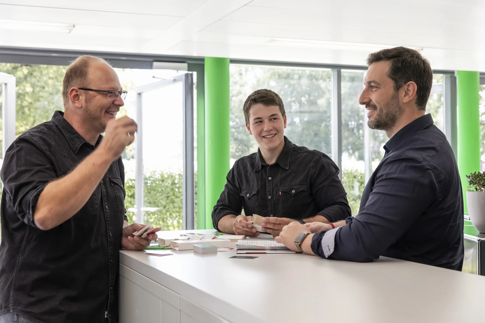
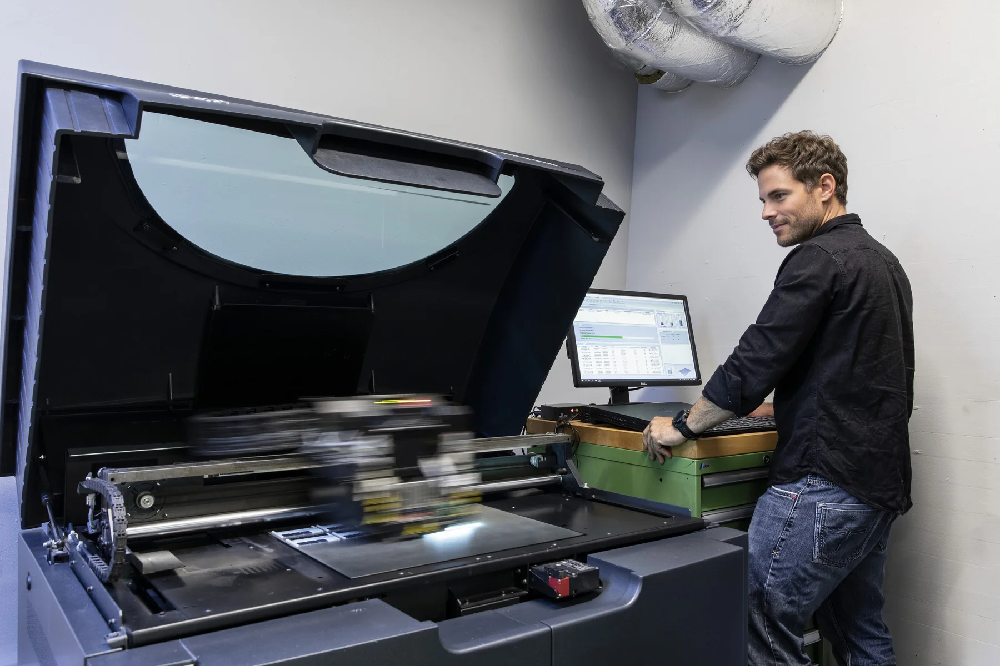
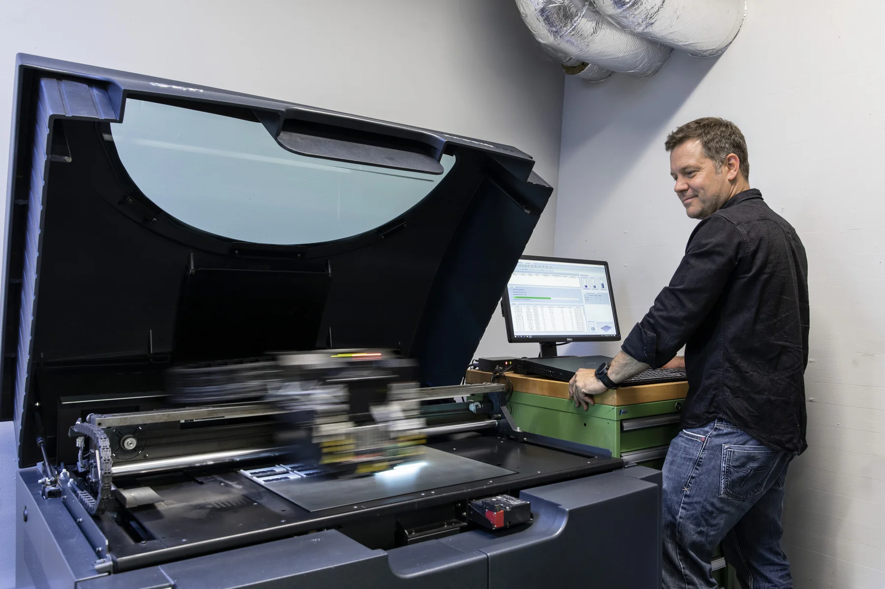

Vorschau r1 · Entscheidungsseite
Drei Fotos, je zwei Fassungen.
Links die Fassung, die heute auf der Seite steht, rechts dasselbe Foto mit neu erzeugtem Kopf. Unter jedem Foto ein Ausschnitt um den Kopf.
Der Gesichtsvergleich misst, wie ähnlich der Kopf der echten Person ist (OpenCV, gleiche Person ab 0,363). Die neuen Fassungen liegen deutlich darunter.
Entscheid offen: 16, 21, 11 behalten oder 24, 25, 26 auf die Seite setzen.
Team · Foto 16 gegen 24
Mann rechts im Teamfoto.
Auf der Seite im Team-Block. Neu erzeugt ist nur der Kopf rechts, der Lehrling ist in beiden Fassungen gleich.

Prozess · Foto 21 gegen 25
Mitarbeiter am 3D-Drucker.
Auf der Seite im Prozessschritt 04 Entwicklung.


Kompetenzen · Foto 11 gegen 26
Besprechung mit Flasche.
Auf der Seite in der Karte Entwicklung. Die Person von hinten ist in beiden Fassungen gleich.
Interne Vorschau, nicht indexiert. Startseite